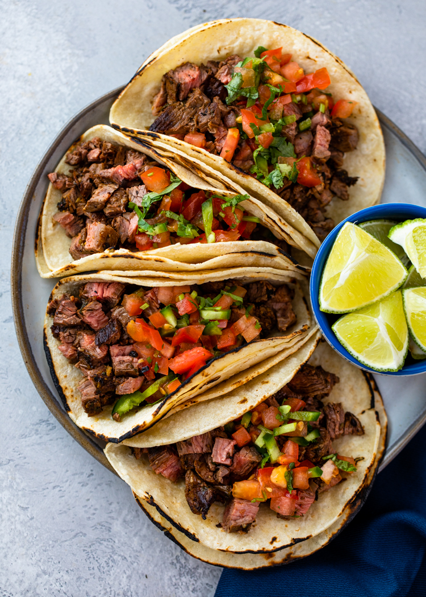

Carne Asada Tacos
Spice up your day with our Carne Asada Tacos
— where savory grilled goodness meets the vibrant zest
of authentic Mexican flavors, creating a taco experience like
no other.
4 out of 5 Stars

Prep Time
Cook Time
Total Time
15 min
15 min
30 min
Ingredients
- 1 lb flank or skirt steak
- 1/4 cup olive oil
- 2 tablespoons orange juice
- 3 tablespoons lime juice
- 4 cloves garlic, minced
- 1 teaspoon ground cumin
- 1 teaspoon chili powder
- 1 teaspoon dried oregano
- Salt and black pepper, to taste
- Corn tortillas
- Toppings: Chopped onions, fresh cilantro, salsa, lime wedges
Instructions
- In a bowl, mix together olive oil, orange juice, lime juice, minced garlic, cumin, chili powder, dried oregano, salt, and black pepper.
- Place the steak in a resealable plastic bag and pour the marinade over it. Seal the bag and refrigerate for at least 2 hours or overnight.
- Preheat a grill or grill pan over medium-high heat.
- Remove the steak from the marinade and grill for about 6-8 minutes per side, or until desired doneness.
- Heat the corn tortillas on the grill or in a pan.
- Assemble your tacos by placing slices of carne asada on each tortilla.
- Top with chopped onions, fresh cilantro, salsa, and serve with lime wedges.
- Serve and enjoy your delicious Carne Asada Tacos!
4 Comments